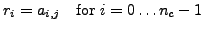

Next:
Inserting a color vector
Up:
Type conversion and component
Previous:
Inserting a Dirac propagator
Extracting a color column vector from a color matrix
Syntax
void QLA_V_
eqop
_colorvec_
T
( restrict QLA_ColorVector *r,
Type *a, int j)
Meaning

T
M
eqop
eq
James Osborn 2006-06-25